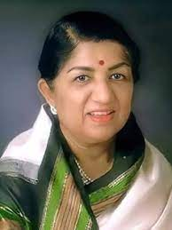

LATA MANGESHKAR
~ Indian Playback singer

About LATA MANGESHKAR - 'Nightingale of India'
- Like all inspirational stories, Lataji’s early struggle to establish herself in the 1940s is one that we cannot ever forget. In those days, she would take a BEST bus and travel from her south Mumbai home regularly to meet Naushad Ali at his Khar West bungalow or in the studios, hoping for a ‘singing break’ under the legendary music maker’s baton.
- In the vicious Mumbai monsoon, she would come to Naushad’s home, wearing her trademark sari, carrying an umbrella but totally drenched, shivering and barely able to speak, let alone sing. The music director would offer her piping hot tea and cookies to soothe her, but no songs … yet … .
“I felt her voice was not yet ‘ripe’ for my style of music,” said Naushad, the perfectionist, in a conversation with this writer. He was trying to justify not giving her an early break. “To improve her diction and control over words, I advised her to learn and practice Urdu, which she did … and finally, she was ready to record for me.”
- The first choices of Naushad were the reigning stalwarts — Noorjehan, Suraiya, Shamshad Begum, Zohra Ambalewali, to name a few.
With time, trained by her father, Dinananth Mangeshkar, Lataji grasped the maestro’s advice and got her first major hit — ‘Uthaye Ja Unke Sitam’ (‘Andaz’, 1949) — composed by her mentor Naushad. With it, she ‘arrived’ in the film industry.
Thereafter, top music directors of the era wooed her, and they included Sachin Dev Burman, Husan Lal-Bhagat Ram (brothers), Ghulam Haider, Sardar Malik, Ghulam Mohammed, Jaidev, Salil Chowdhary, C. Ramchandra, Shankar-Jaikishan (partners), Roshan, Madan Mohan, M. Zahur Khayyam, Kalyanji-Anandji (brothers), Laxmikant-Pyarelal (partners), Sonik-Omi (uncle-nephew), Ravi Kumar Sharma or ‘Ravi’, Sudhir Phadke, Sajjad Hussain, Usha Khanna, and even A.R. Rahman, Anu Malik, Rajesh Roshan, Anand-Milind and Jatin-Lalit,
among the younger crop of baton wielders.
- Producers and directors vied for Lataji’s unique voice and style for their top heroines, especially because she could ‘mould’ her voice to suit most heroines. Without doubt, she had become the first among women singers, a position that Mohammed Rafi enjoyed among the men.
Yet, there was a music director who remained aloof from Lataji — with haughty pride — and yet rose to the top echelons of the music industry — the incomparable O.P. Nayyar.
“I found Lata’s voice too thin, too shrill, which did not suit my compositions,” Nayyar had once said, claiming he was “the only music director who succeeded in Bollywood without Lata’s voice”.
- He added: “I needed a more vivacious, richer, healthier voice of, say, Shamshad Begum, Geeta Ghosh-Dutt, Asha Bhosale.” One woman singer, Suman Kalyanpur, was blessed with a voice rivalling that of Lataji’s, but she was content being in the shadows, yet she thrived on enduring masterpieces composed by some of the music directors.
As Lataji’s singing style matured under master music directors, her voice helped heroines who acted or danced to her tunes catapult to stardom, such as Madhubala, Meena Kumari, Nargis, Ameeta, Beena Rai, Waheeda Rehman, Vyjayanthimala Bali, Tanuja, Sharmila Tagore, Asha Parekh, Nutan, Saira Bano, Sadhana Shivdasani, Babita Kapoor, Zeenat Aman, Parveen Babi, Hema Malini, Rekha, Sridevi, Neetu Singh, Madhuri Dixit, and many others in the post-1980s, right down to the youngsters, notably,
Kajol, Rani Mukherjee and Karisma Kapoor.
- After the exit of Noorjehan from India and the fading away of other stalwart female singers, by the late 1950s/early 1960s, Lataji was firmly perched on the top of the heap and brooked no nonsense from anyone — producers, directors, composers, siblings or contemporaries — attempting to clamber anywhere close to her roost.
Bollywood is full of stories of how Lataji ring-fenced her position till the very end, often raising the hackles of her female peers, although male singers, such as Mohammed Rafi, Mukesh, Kishore Kumar, Mahendra Kapoor and Manna Dey (all deceased) and others,
chose to maintain a professional rapport with her./li>
- Nevertheless, there were tales of how Rafi once bore the brunt of her “other side”, or certain composers quivering as she gently declined to sing for them after they allegedly dared to commission some other female singers, for whatever reason. Of course, powerful filmmakers such as Mehboob Khan, Raj Kapoor, Kamal Amrohi, Dev Anand, Shakti Samanta, B.R. Chopra,
Yash Chopra and the likes had no time for tantrums.
- Born on September 28, 1929, as the oldest child of a musically inclined family in Indore (Madhya Pradesh) — comprising father Dinanath, Lataji, Meena (Khadilkar), Asha (Bhosale), Usha and sole brother Hridaynath — she was tutored by her dad from the age of five and also acted in his musical stage plays, till death in 1942.
Helped by a close family friend, Master Vinayak D. Karnataki, she got a foothold in singing and acting that year with a first Marathi song and a maiden Hindi song in 1943 before shifting to the film industry capital in 1945.
In Bombay (now, Mumbai), she learnt classical music and continued singing the odd songs, till her big break with ‘Dil Mera Toda, Mujhe Kahinka Na Chhoda’ (‘Majboor’, 1948), with full help from Ghulam Haider, whom she later described as her “godfather”.
- With a colossus such as Noorjehan still around, Lataji continued her with a few more hits — ‘Aayega Aanewala’ (‘Mahal’, 1949) and ‘Uthaye Ja Unke Sitam’ (‘Andaz’, 1949), heralding her entry with a bang in big-time Bollywood.
Simultaneously, she sang in different Indian languages with aplomb, non-film songs, with her range encompassing classical, tragic, melodious, erotic, melancholic, light, mischievous, depending on the composer, or the heroine, or the song situation.
After the seniors passed away or faded out, Lataji sang expertly and easily with the gen next of male singers such as S.P. Balasubramaniam, Amit Kumar, Shabbir Kumar, Nitin Mukesh, Anwar, Udit Narayan and Sonu Nigam, and astounded her listeners with the
seemingly “undying” power and youthfulness of her golden voice.
- Over the decades, she was decorated with a multitude of rewards and honours — three Padma awards, five Filmfare Awards, the Dadasaheb Phalke Award — capped by the Bharat Ratna in 2001. More than that, state governments named awards and institutions after her.
Lataji sang at prestigious live concerts or charitable events, enthralling global audiences, picked up more overseas accolades, such as France’s highest civilian honour, Officer of the Legion of Honour, in 2007, briefly dabbled in high-end merchandise, such as signature jewellery and perfumes, launched a production and music house, and entered into international music collaborations.
Death has only removed her physically. The legacies she leaves behind will outlive her for decades.
'Her soulful voice will live forever in our hearts'
'Queen of Melody'